Portfolio · 2ème année DEUST IOSI · CNAM
Étudiant en 2ᵉ année de DEUST IOSI au Cnam de Paris, je m'intéresse au développement web (HTML/CSS, JavaScript, MERN) ainsi qu'à l'administration système et réseau. Passionné par la résolution de problèmes techniques et curieux d'apprendre, je recherche une alternance pour mettre en pratique mon savoir-faire et monter en expertise aux côtés d'une équipe technique.
02 — Mes Projets
Situation
Projet personnel pour maîtriser la stack MERN.
Tâche
Développer une application de chat en temps réel.
Action
Implémentation avec MongoDB, Express, React, Node.js.
Résultat
Application de chat fonctionnelle.
Situation
Dans le cadre d'un projet pratique réalisé en cours, j'ai appris à collecter et centraliser automatiquement des métriques système. L'enjeu était d'assimilier la mise en place d'un flux de données complet, depuis la récupération des informations brutes sur la machine via des scripts jusqu'à leur mise à disposition au travers d'une API.
Tâche
Développer une solution globale de collecte automatisée comprenant :
• Des scripts d'extraction légère et périodique des données système.
• Une API REST sécurisée et performante pour recevoir et traiter les données.
• Une base de données relationnelle légère pour persister l'historique.
• La conteneurisation intégrale de l'application pour garantir un déploiement rapide et reproductible.
Action
J'ai structuré l'outil autour d'une architecture modulaire et conteneurisée :
• Scripting Bash : Écriture de scripts Shell automatisés (cron jobs) assurant la collecte des métriques (CPU, RAM, disque, requêtes externe).
• API FastAPI : Développement d'endpoints en Python avec FastAPI pour ingérer les payloads JSON, valider le schéma de données et gérer le routage.
• Stockage SQLite : Modélisation et intégration d'une base SQLite légère pour requêter efficacement l'historique.
• Docker : Création de Dockerfiles optimisés pour isoler l'API et ses dépendances.
Résultat
Livraison d'un outil de collecte robuste et totalement fonctionnel. L'utilisation de FastAPI garantit des temps de réponse ultra-rapides. La conteneurisation Docker permet de déployer l'environnement en une seule commande (`docker-compose up`). Ce projet a renforcé mes compétences en scripting système, architecture API REST et concepts DevOps fondamentaux.
📸 Aperçu
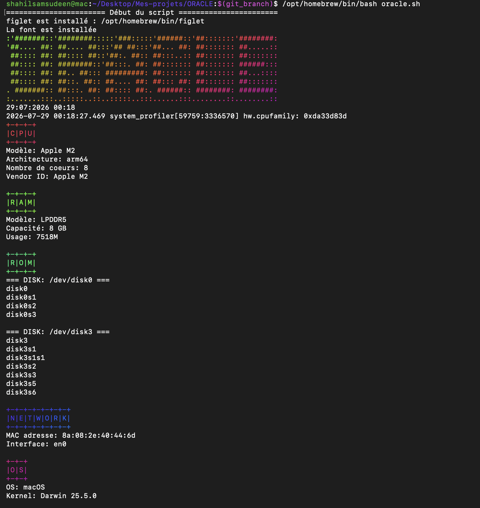
Vue 1
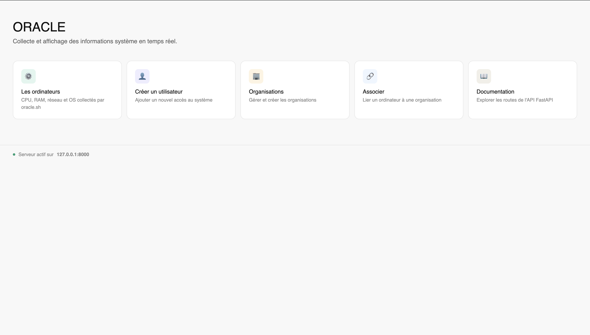
Vue 2
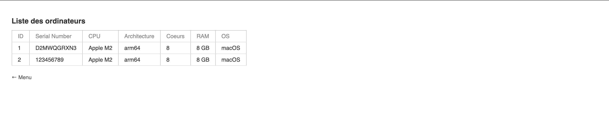
Vue 3
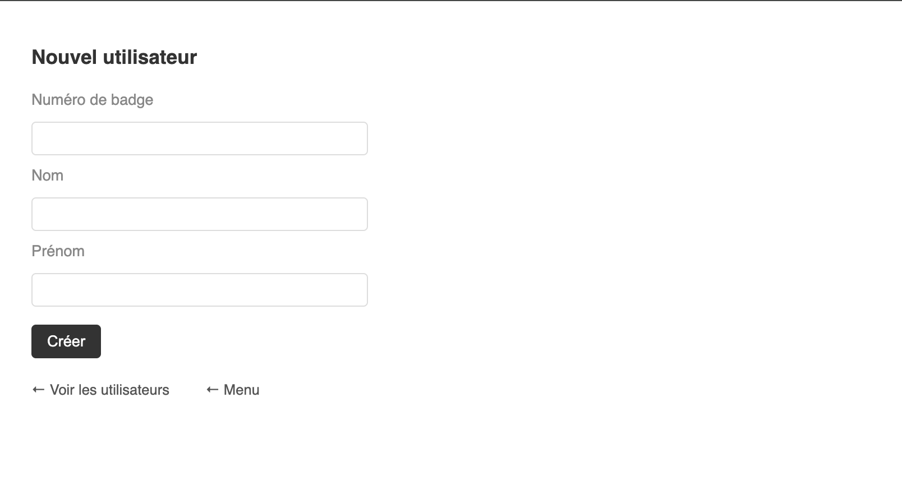
Vue 4
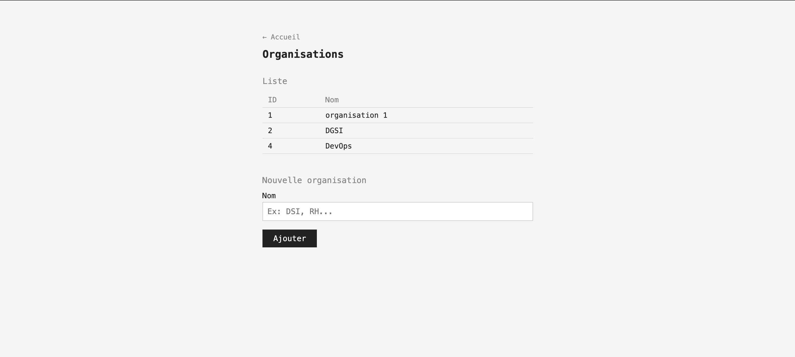
Vue 5
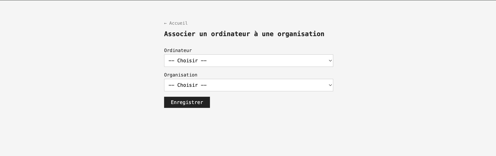
Vue 6
Situation
Dans le cadre d'un projet en première année de Bachelor Informatique au CNAM, je devais mettre en pratique mes bases en HTML/CSS sur un projet réel et complet. J'avais déjà abordé le HTML/CSS en cours, mais jamais sur un projet aussi complet avec navigation inter-pages, formulaire et design cohérent. L'objectif était de réaliser un projet propre, fonctionnel et bien organisé, en binome, en seulement 2 jours.
Tâche
Créer un site web de recettes multipage, cohérent visuellement et fonctionnel, en partant de zéro. Le site devait inclure :
• Une page d'accueil avec une galerie de recettes.
• Des pages de recettes individuelles.
• Un formulaire de contact opérationnel.
• Une page FAQ structurée.
Action
J'ai d'abord conçu l'arborescence des fichiers sur papier avant de coder, puis avancé page par page en commençant par les éléments communs (header, CSS global).
• Arborescence HTML/CSS séparés par page
• CSS Grid 3 colonnes responsive (mobile → desktop)
• Header commun et navigation inter-pages
• Cartes cliquables avec images intégrées
• Formulaire de contact avec validation HTML5
Résultat
Site web complet avec 6 recettes, responsive mobile/tablette/desktop, livré en 2 jours dans les délais imposés. Projet validé dans le cadre du cours, et retenu comme pièce maîtresse de ce portfolio — preuve concrète de ma capacité à mener un projet web de A à Z en autonomie totale.
📸 Aperçu
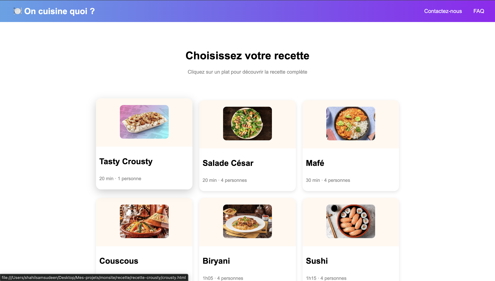
Home
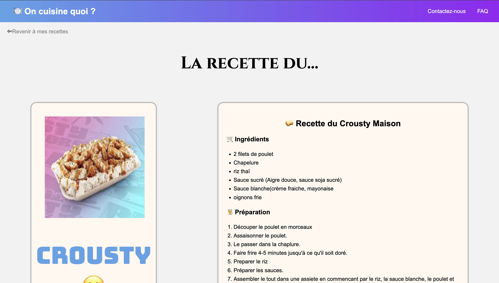
Détail
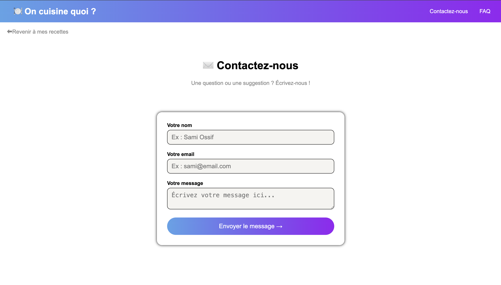
Recettes
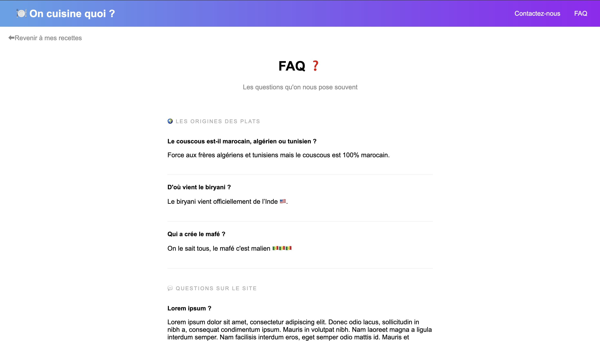
Contact
Situation
Dans le cadre d'un projet de cours au CNAM, je devais concevoir une application web de gestion de tâches d'équipe en JavaScript pur. L'enjeu : manipuler des structures de données complexes et maintenir une cohérence entre plusieurs entités (tâches, travailleurs, départements) sans aucun framework ni base de données.
Tâche
Créer une application interactive permettant de :
• Suivre un score individuel par travailleur
• Ajouter et valider des tâches assignées à des travailleurs
• Agréger les statistiques par département en temps réel
• Calculer la moyenne de tâches validées par département
Action
J'ai modélisé l'application autour de trois tableaux d'objets synchronisés et mis en place un système de mise à jour en cascade.
• 3 structures de données : tabTaches, tabTravailleurs, tabDepartement
• Ajout dynamique de travailleurs et de départements à la volée
• Validation de tâche déclenchant une mise à jour en cascade (score travailleur + stats département)
• Rendu HTML généré dynamiquement via innerHTML
Résultat
Application fonctionnelle avec gestion d'état en temps réel, sans rechargement de page. Les scores, statistiques de département et moyennes se mettent à jour instantanément. Ce projet m'a permis de maîtriser la manipulation du DOM, la gestion d'événements et la synchronisation de données entre plusieurs structures — compétences clés du développement front-end.
📸 Aperçu
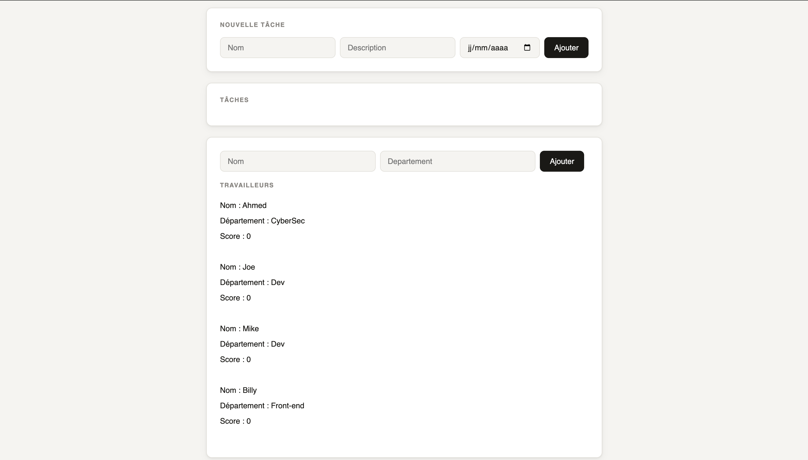
Vue 1
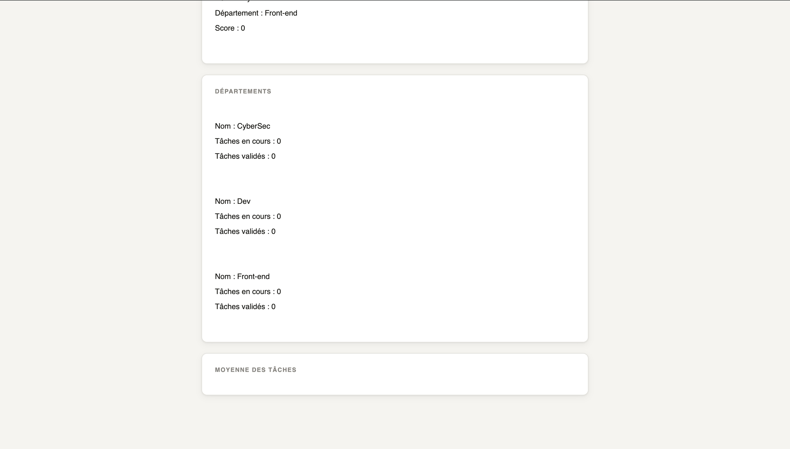
Vue 2
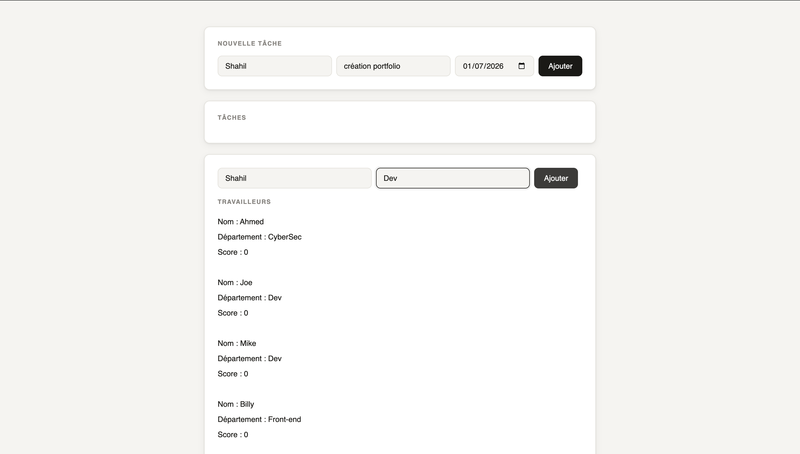
Vue 3
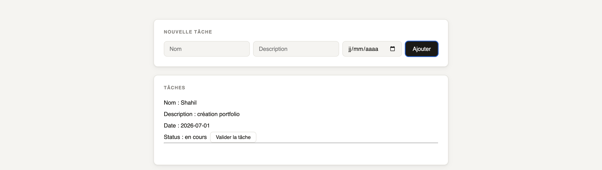
Vue 4
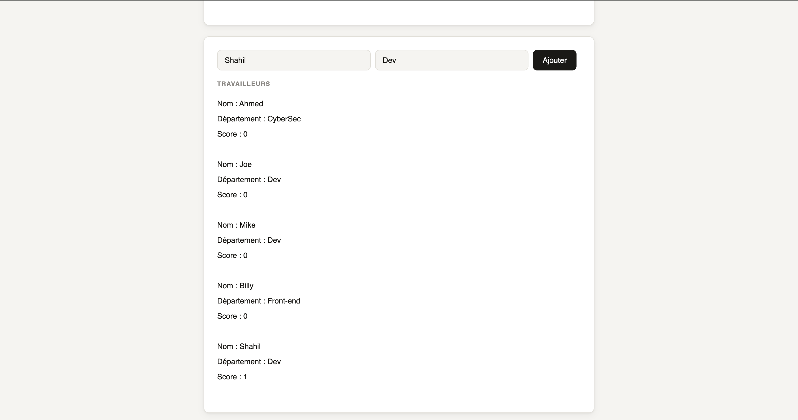
Vue 5
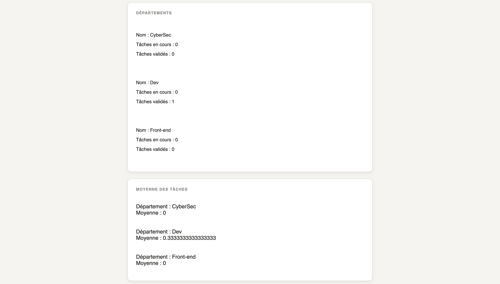
Vue 6
Situation
Dans le cadre de mon cours de programmation en C au CNAM, j'ai implémenter un jeu de morpion complet en terminal. Le langage C, avec sa gestion manuelle de la mémoire et son absence de bibliothèques natives pour les interfaces, imposait une rigueur algorithmique stricte.
Le défi : modéliser la logique complète du jeu (détection de victoire, alternance des joueurs, validation des saisies) sans aucun framework.
Tâche
Concevoir et mettre en oeuvre un jeu de morpion interactif en ligne de commande capable de :
• Gérer une grille 3×3 représentée en tableau de 9 cases
• Détecter toute combinaison gagnante (lignes, colonnes, diagonales)
• Valider les saisies et refuser les cases déjà prises
• Afficher la grille après chaque coup et annoncer le vainqueur
Action
J'ai découpé le problème en fonctions pures et indépendantes, conformément aux bonnes pratiques du C procédural.
• Représentation de la grille sous forme d'un char[9] initialisé à '_'
• 4 fonctions de détection : ligneIdentique, colonneIdentique, diag1Identique, diag2Identique
• Boucle principale avec double condition d'arrêt (victoire ou 9 coups)
• Validation de la saisie en boucle while imbriquée
Résultat
Programme fonctionnel, robuste et bien structuré : aucun bug de détection de victoire, gestion complète des cas limites (case invalide, partie nulle). Le découpage en fonctions a rendu le code lisible et facilement testable. Ce projet m'a permis de maîtriser la logique procédurale, la manipulation de tableaux en C et la gestion de boucles imbriquées, des fondamentaux essentiels pour un développeur.
📸 Aperçu
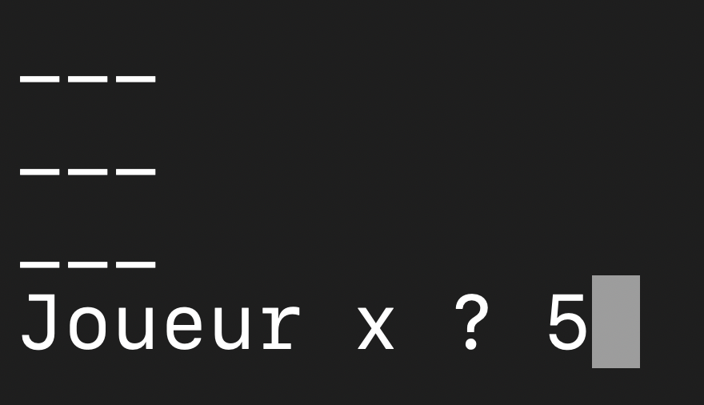
Jeu en cours
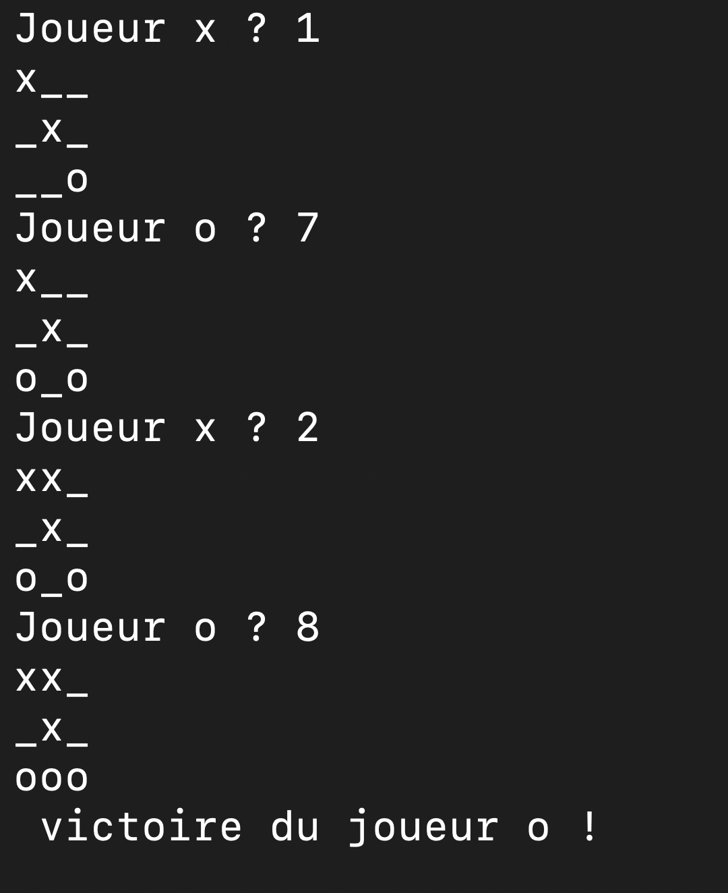
Fin de jeu
03 — La Boîte à Outils
04 — Contact
Je suis disponible pour un stage en informatique / DevOps.
N'hésitez pas à me contacter !